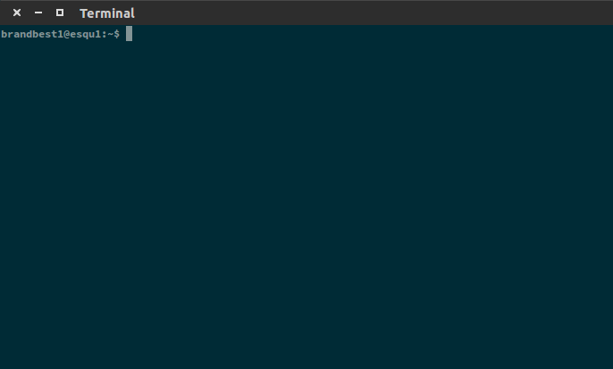

How to Use the Terminal¶
Written by Brandon Lin on 2016-04-06
Reformatted by Shakil Rafi on 2017-03-12
- What is Terminal?
- Running Terminal
- Where Are We?
- Who’s There?
- Moving Around
- Making Files
- Making Directories
- Be Gone!
- Moving
- Replication
- Having a Look
- I Am Superuser
- Some Terminal Perks
- Conclusion
What is Terminal?¶
Terminal is the main navigation system within systems such as OS X and distributions of Linux. For Windows users, you may know Terminal as a pseudo-Command Prompt. However, the two systems are very different, with Terminal having a lot more capabilities. If you are a Linux user, Terminal will be the main application for you to get around your machine.
Running Terminal¶
Running Terminal can be done in the following fashion: Ctrl + Alt + t
You will then be presented will something like this:
The text that appears before your cursor is known as the prompt. The default prompt will consist of your username, the name of your machine, as well as the current active directory (more on this later).
The text you will be typing into Terminal are known as commands. These terminal commands allow you to perform various tasks in the Terminal, and we will be going over many of them here. Sometimes, a command may require you to specify a file to perform the command to, so you may need to provide arguments to a command if necessary.
Where Are We?¶
As mentioned before, the Terminal allows you to navigate your file system. Imagine the Terminal as a person in a public library. The various categories of books and, within those books, the different chapters, represent the folders, or directories, in your file system.
So now that we have a grasp of what we do with the Terminal, let’s introduce a very basic command:
pwd. Enter the command like this:
username@Linux:~$ pwd
This command will tell you where you currently are in your file system. For example, your usual starting
directory will be in your home directory, which should look something like : /home/username
Many times the home directory is abbreviated as a tilde: ~
Who’s There?¶
We often forget what files are currently in our system. To view what files and other folders are in our
current directory, use the ls command. This command will display all the files and folders within the
directory you are currently in.
There are some variations of the ls command, with the use of flags:
ls -l Views the files in a list format, alongside other properties of these files, like permissions
and write times.
ls -a Views ALL files in the directory, including hidden files (hidden files have a preceding .
in their name).
Moving Around¶
Staying in our home directory must be boring. We would really like to move ourselves around to other
folders within directories. We can accomplish this with the cd command.
Typing
$ cd folderName/
will send you into folderName and make that your current directory. We can also navigate through
multiple folders at the same time:
$ cd folder1/folder2/folder3/
We also want to know how to navigate backwards in our directory system. To go one level back, the command
is cd ... We can also go two levels up at the same time: cd ../..
Making Files¶
To make a blank file within the current directory, use the touch command:
$ touch blah.txt
This can also be used to update the time stamp on a currently existing file.
Making Directories¶
Making new folders is simple:
$ mkdir folderName
This creates a new directory in which you can navigate now.
Be Gone!¶
Making things is cool and everything, but what happens when you want to remove a file? We can use the
rm and rmdir commands to remove files and directories, respectively.
Warning
There is no “recycling bin” when you execute rm or rmdir!
When you execute rm, the file is gone for good. Also, rmdir only works if the desired directory is
empty. Therefore, you must remove all the objects in a directory before deleting it. If you wish to remove
a folder in one go, you may do:
$ rm -rf folderName
Danger
Be very careful when you do this; you could remove a bunch of files within a massive folder.
Moving¶
To move a file, use the mv command as follows:
$ mv fileName newFolder/
This moves the file into a new (already existing!) folder. Note that we can also use this command to rename files:
$ mv oldName newName
Having a Look¶
If we ever want to look at the contents of a file and have it print it in the Terminal, we can use the
cat command; this just takes a file and shows the content of the file.
I Am Superuser¶
You should note that your entire file system isn’t editable by the typical user. Some files that are
critical to the functioning of the computer have limiting write permissions. There are two modes you can
be in: normal user mode, which you should be in when you open the terminal, and root, or sudo,
mode, which is analogous to having “admin” privileges.
To run a command with sudo privileges, simply precede the desired command with sudo
$ sudo mv file1 file2
Admin privileges don’t come for free, so you will have to enter your password before the command runs. After running a command with sudo, you will maintain sudo privileges for a brief while.
Some Terminal Perks¶
There are many more Terminal commands that exist. This website is a good comprehensive list of many Terminal commands. Here, we go over a few more things you can do with your Terminal.
Auto Complete
If you have a long file name to type, you can type the first few letters of the name, then hit the Tab
key to autocomplete the rest of the name! Convenient! However, if you have multiple files with the same
first few letters, the terminal will display the names of those files and you will need to type a few more
letters to get the desired files.
Customizing Terminal
You can change the color scheme of your Terminal, the way the prompt looks, and many other things! Many
configurations lie in the .bashrc file in your home directory; go check them out, and feel free to
look up how to do more!
ZShell
You can soup your Terminal up from the built-in Bash, and change it into ZShell, which is more versatile and more customizable. More here.
Conclusion¶
That concludes this guide on Terminal. Hopefully you are able to navigate your system efficiently; happy coding!